API
取色器(EyeDropper)
EyeDropper
const box = document.queryselector(".box");
const label = document.queryselector("label");
//点击以后就可以开始取色
btn.onclick = async () => {
const dropper = new Eyedropper();
try {
const result = await dropper.open();
label.textContenet = result.sRGBHex;
box.style.backgroundcolorlabel = result.sRGBHex;
} catch {
console.log("user canceled");
}
};
单页内部跳转
1.hash
<a href="#app"></a>
2.scrollIntoView
//将页面跳转到dom元素的位置
dom.scrollIntoView({
behavior: "smooth",
});
交叉观察器(IntersectionObserver)
监听某个元素跟视口是否有交叉
const ob = new Intersectionobserver(()=>{},{
root:null
threshold:0,
})
const dom = document.queryselector('.loading');
ob.observe(dom)
尺寸变化观察器（ResizeObserver）
观察的元素尺寸变化时会运行里面的函数
const ob = new ResizeObserver(()=>{ //dom尺寸发生变化后，运行这里面的函数 })
ob.observe(dom)
元素观察器（MutationObserver）
const p = document.createElement("p");
const observer = new MutationObserver(() => {
//一旦元素发生变化，就把这个函数放入微任务中去执行
});
observer.observe(p, {
childList: true, // 观察该元素内部的变化
});
p.innerHTML = "1";
文件读取器(FileReader)
const reader = new FileReader();
reader.onload = (e) => {
e.target.result; //一段时间后得到一个base64的文件数据
};
reader.readAsDataURL(file); //读文件的二进制数据
requestIdleCallback
空闲时优化渲染
插入一个函数，这个函数将在浏览器空闲时期被调用。这使开发者能够在主事件循环上执行后台和低优先级工作，而不会影响延迟关键事件，如动画和输入响应
requestAnimationFrame
requestAnimationFrame 是一个用于在下一个浏览器重绘之前执行回调函数的方法。它可以用于创建流畅的动画效果
浏览器大概是 16.6ms 渲染一次
Service Worker
Service Worker 是一种在 Web 浏览器后台运行的脚本，它独立于网页，能够拦截和处理网络请求，实现离线缓存、后台同步等功能，从而提升 Web 应用的性能和用户体验。
注册
navigator.serviceWorker
.register("./service-worker.js")
.then((registration) => {
console.log("Service Worker registered:", registration);
})
.catch((error) => {
console.error("Service Worker registration failed:", error);
});
拦截请求
self.addEventListener("fetch", (event) => {
event.respondWith(
caches.match(event.request).then((cachedResponse) => {
// 如果缓存中存在请求的响应，则直接返回缓存的响应
if (cachedResponse) {
console.log("Response from cache:", event.request.url);
return cachedResponse;
}
// 如果缓存中不存在请求的响应，则继续向网络发出请求
return fetch(event.request)
.then((networkResponse) => {
// 将从网络获取到的响应添加到缓存中
return caches.open("dynamic-cache").then((cache) => {
cache.put(event.request, networkResponse.clone());
return networkResponse;
});
})
.catch((error) => {
console.error("Fetch error:", error);
// 如果网络请求失败，可以返回一个自定义的响应
return new Response("Network request failed!", {
status: 500,
statusText: "Internal Server Error",
});
});
})
);
});
web worker
js 是运行在渲染主线程的。这才是导致在单线程的原因；大量密集型计算会导致主线程卡死，可以利用 web work 来让非主线程进行计算，使得主线程不卡
// worker.js
self.onmessage = function (e) {
// 接收到主线程发送的任务数据
let data = e.data;
// 在这里执行具体的任务，比如计算斐波那契数列
// 将计算结果发送回主线程
self.postMessage(result);
};
//index.js
let worker = new Worker("worker.js");
worker.onmessage = function (e) {
// 接收到Worker线程发送的结果
let result = e.data;
console.log("计算结果:", result);
};
// 向Worker线程发送任务数据
worker.postMessage(10);
什么时候用 webworker?
1.cpu 密集型任务
2.任务可被分割
应用
1.大文件计算 hash
2.加密与解密，解析 json，分块显示
new.target
这个东西可以知道你是怎么调用这个函数的
如果是直接调用,new.target = undefined;
如果是 new 调用,new.target 就只想你 new 的那个构造函数
textdecoder
文字解码器
const str = testDecoder.decode(类型化数组);
剪切板 clipboard API
navigator.clipboard.readText().then((text) => {
//text就是剪切板里面的内容
});
监听复制行为
window.addEventListener("copy", fun);
音频处理 audiocontext
网络状态 navigator.connection
获取电脑的网络状态
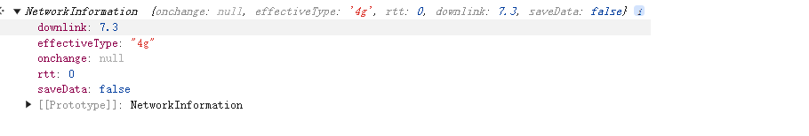
URL.createObjectURL(文件对象)
传入一个 blob，得到一个临时的 url 对象
const objectURL = URL.createObjectURL(blobOrFile);
可以拿到一个本地的播放地址
blob:http://localhost:5500/xxxxxx
utf8-array
utf8 编码的数组，可以使用构造函数互相转换
const encoder = new TextEncoder();
const decoder = new TextDecoder();
const str = "你好，世界！";
const utf8Array = encoder.encode(str);
console.log(utf8Array); // Uint8Array(15) [228, 189, 160, 229, 165, 189, 44, 32, 228, 184, 173, 229, 155, 189, 33]
const decodedStr = decoder.decode(utf8Array);
CSS
纵向滚动变横向滚动
思路
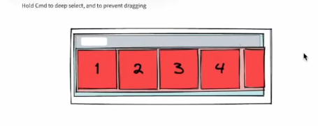
套三层 div
中间那层 div 的宽度是父元素的高度，高度是父元素的宽度（为了滚动条）
最里面那层 div 旋转 180 跟中间层贴合
中间那层 div 再旋转 180 跟最外层贴合
文字下划线滑动
行盒背景图是随着文字变化而变化的
把背景做成下划线，然后再加上 css 动画
文字镂空效果
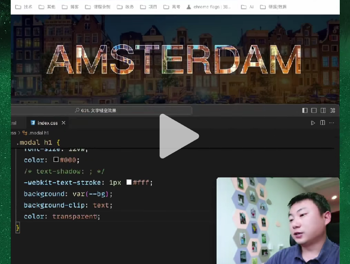
1.背景图再加上一个黑色半透明蒙层
2.文字本身颜色透明，把文字背景颜色设置一下，同时只作用于文字
css 吸附效果
scroll-snap-type
下拉高度过渡动画
1.给最大高度（但还原的时候可能会延迟）
2.采用 transform:scaleY(0) ->transform:scaleY(1)(效果有一点偏差，会被压缩)
3.采用 js 先设置为 auto 拿到高度，再给他这个高度
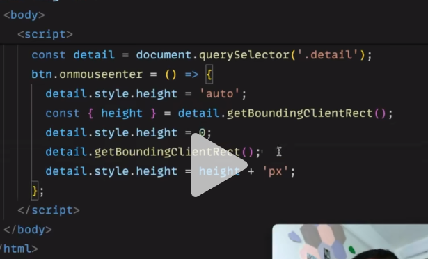
常用属性
inital,unset,revert
这三个是 css 的属性值（通用）
inital,unset 是返回默认样式
revert 是返回浏览器的默认样式
dpr
设备像素比
设备像素就是买笔记本的物理像素
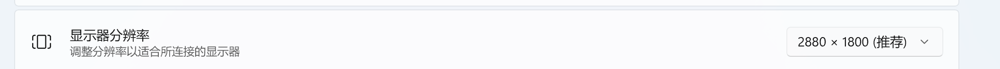
但我们操作系统会对我们的屏幕像素有缩放
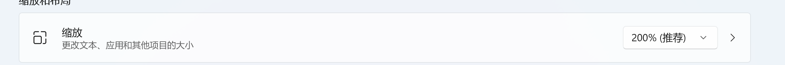
同时浏览器的窗口大小也可以缩放
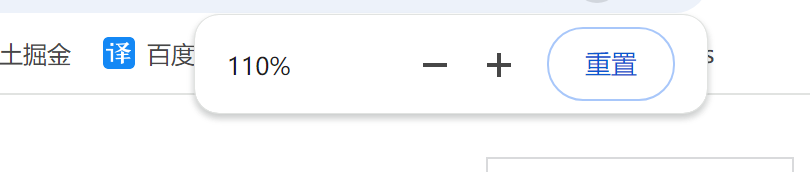
window.devicePixelRatio 可以拿到比例
想要图片清晰就是要容器的 width * dpr 等于图片的原始宽度(natureWidth)
css 变量的应用
注意：在 translateX 中，百分比是相对于自身的，这里的 100%指的就是.circle 类的宽度的 100%。
这里的父元素宽度 css 不好计算，但 js 好计算。css 好做动画，js 不好做动画
解决方案就是定义一个 css 变量，js 去修改 css 变量的值，css 去应用这个变量
.circle{
animation: move 1s;
width:400px;
}
@keyframes move{
50%{
transform: translateX(calc(父元素的宽度-100%))
}
}
多元素组合动画
抛物线：先要横向弹跳一下，再垂直向下
思路：
可以设置两个元素的运动，父元素横向运动（可以设置贝塞尔曲线），子元素垂直运动
浏览器
浏览器指纹
假设世界上没有两个一摸一样的浏览器环境（型号，版本，操作系统的型号版本，硬件的型号与版本）
比如采用 canvas 签名
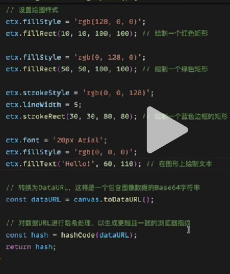
画一个东西，转化成数据进行比对
作用
广告
防刷
网络
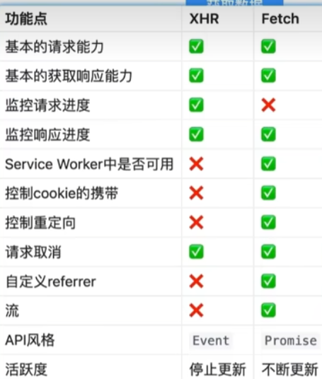
fetch 超时和中断
也是柯里化的一个应用
//这样的用法有点像闭包，柯里化，可以在外层保留超时时间
function createFetchWithTimeout(timeout = 1000) {
return function (url, options) {
//想要这个promise完成
// 1.fetch的then去调用resolve或者reject
// 2.超时时间到,setTimeout去调用reject
return new Promise((resolve, reject) => {
const singalController = new AbortController();
fetch(url, {
...options,
signal: singalcontroller.signal,
}).then(resolve, reject);
//一旦有结果，setTimeout去改变promise的状态就是无效的，所以可以直接计时，当计时到的时候如果promise的状态还是pending,才会将promise的状态修改成reject
setTimeout(() => {
reject(new Error("fetch timeout"));
singalcontroller.abort();
}, timeout);
});
};
}
singalcontroller.abort()一旦调用，就会丢弃掉这次响应，浏览器不会理会，关闭连接
对于服务器来说要在响应的接口加入判断浏览器的连接是否关闭，来使得自己要不要继续响应这个请求
并发任务请求
function timeout(time) {
return new Promise((resolve, reject) => {
setTimeout(() => {
resolve();
}, time);
});
}
// tasks 任务队列
// concurrency 最大并发数量
// currentCount 正在执行的任务数量
class SuperTask {
constructor(concurrency = 2) {
this.concurrency = concurrency;
this.tasks = [];
this.currentCount = 0;
}
add(task) {
return new Promise((resolve, reject) => {
this.tasks.push({
task,
resolve,
reject,
});
//当有新的任务进来，要看这个任务能否执行
this._run();
});
}
// 等待叫号
_run() {
while (this.currentCount < this.concurrency && this.tasks.length) {
const { task, resolve, reject } = this.tasks.shift();
this.currentCount++;
Promise.resolve(task().then(resolve, reject)).finally(() => {
this.currentCount--;
this._run();
});
}
}
}
const superTask = new SuperTask();
function addTask(time, name) {
superTask
.add(() => timeout(time))
.then(() => {
console.log(`任务${name}完成了`);
});
}
addTask(1000, 1);
addTask(1000, 2);
addTask(1000, 4);
addTask(1000, 3);
请求取消
应用：比如说输入的东西需要远程请求，那么下一次请求需要把上一次请求给取消，以免请求
的顺序和响应的数据不一致。
请求取消还是使用:abortController
fetch 请求（流式读取）
需要等两次
第一次等的是响应头
第二次是表明你需要的响应体格式，然后继续等他全部到来
这里也可以做响应数据的进度监控
async function request() {
//第一次等待的是响应头到达的时间
const resp = await fetch("https://www.baidu.com");
//这里等待的是响应数据（完整数据）
const body = await resp.json();
const total = resp.headers.get("content-length"); //请求体的总字节数
//也可以分块读数据
const reader = resp.body.getReader();
let loader = 0; //刚开始是0
while (1) {
const { done, value } = await reader.read();
if (done) {
break;
}
const str = textDecoder.decode(value);
loader = loader + value.length; //当前的传输量
}
}
数据监控(响应数据和请求数据进度)
响应数据
xhr
const xhr = new XMLHttpRequest();
xhr.open("GET", "https://example.com/data.json", true);
xhr.onload = function () {
if (xhr.status === 200) {
const data = JSON.parse(xhr.responseText);
console.log(data);
}
};
xhr.addEventListener("progress", (e) => {
e.loader; //当前传输了多少
e.total; //一共有多少
});
xhr.onerror = function () {
console.error("Request failed");
};
xhr.send();
axios(xhr 框架)
axios
.get("/your-api-url", {
onDownloadProgress: (progressEvent) => {
const percentCompleted = Math.round(
(progressEvent.loaded * 100) / progressEvent.total
);
console.log(`下载进度：${percentCompleted}%`);
},
})
.then((response) => {
console.log(response.data);
})
.catch((error) => {
console.error(error);
});
请求数据
xhr
const xhr = new XMLHttpRequest();
xhr.open("GET", "https://example.com/data.json", true);
xhr.onload = function () {
if (xhr.status === 200) {
const data = JSON.parse(xhr.responseText);
console.log(data);
}
};
xhr.upload.addEventListener("progress", (e) => {
e.loader; //当前传输了多少
e.total; //一共有多少
});
xhr.onerror = function () {
console.error("Request failed");
};
xhr.send();
axios
axios.post("/upload", formData, {
onUploadProgress: (progressEvent) => {
const percentCompleted = Math.round(
(progressEvent.loaded * 100) / progressEvent.total
);
console.log(`上传进度：${percentCompleted}%`);
},
});
vue
自定义防抖 ref
正常做防抖
由于要使用防抖，就不能使用 v-model 来进行绑定（这样是实时的）
<template>
<input @input="debounceHandler" :value=text />
</template>
<script setup>
const text = ref('');
const inputHandler = (e) =>{
text.value = e.target.value;
}
const debounceHandler = debounce(inputHandler,1000);
</script>
自定义 ref，利用 vue 提供的一个叫 customRef 的 api
<template>
<input v-model="text" />
</template>
<script setup>
import {customRef} from 'vue';
const text = debounceRef('');
function debounceRef(value,delay){
let timer;
return customRef((track,trigger)=>{
get(){
track();
return value;
},
set(val){
clearTimeOut(timer);
timer = setTimeOut(()=>{
value = val;
trigger();
})
}
})
}
</script>
vue 冻结提升效率
利用 Object.freeze(‘响应式数据’)，这样可以提升效率
有些时候响应式数据只是用来展示到页面，但是不会修改，可以使用这种方式
这个方式只能用于 vue2(因为 vue3 使用的是 proxy,不用再循环遍历了)
vue 在 methods 中获取函数方法会丢失问题
一个可取消的防抖函数
function debounce(func, duration = 1000) {
let timerId;
function _executor(...agrs) {
clearTimeout(timerId);
timerId = setTimeout(() => {
func.apply(this, ...agrs);
}, duration);
}
_executor.cancel = () => {
clearTimeout(timerId);
};
return _executor;
}
在 methods 中使用
methods:{
querySearch:debounce(async fnnction(query,cb){
cb(await search(query));
},1000),
cancel(){
//这将会是undefined
this.querySearch.cancel();
}
}
原因
vue 会把你配置在 methods 中的方法提取到实例，所以可以用 this.querySearch 去调用。
他提取的方法是 this.querySearch = methods.querySearch.bind(实例)
由于 bind 绑定过后，函数已经不是之前的函数，所以函数的属性会丢失
解决
把函数放入 data 中，就不会有这样的绑定
组件循环依赖问题
a 组件引用 b 组件，b 组件又引用 a 组件；会导致跟 js 模块循环依赖一样，有一个组件没法拿到另一个组件的导出值
解决
动态导入
components: {
productInfo: () => import("./productInfo.vue");
}
全局导入
TS
重载
在 ts 里面可以提供在编译时态提供重载，所以可以在一开始定义好各种各样的参数组合，这样在调用的时候去可以得到明确的类型提示
定义全局的函数
function fn(params:number):void//第一套规则
function fn(params:string,params2:number):void//第二套规则
function fn(params:number | string,params2?:number):void{
console.log(params)
console.log(params2)
}
let a = fn(1)
//输出1跟undefined，因为遵循的是第一套规则
let b = fn("1",1)
//输出"1"跟1，遵循的是第二套规则
定义对象中的函数
interface fn {
(params: number): void; //第一套规则
(params: string, params2?: number): void; //第二套规则
}
interface utils {
fn1: fn;
}
const utils: utils = {
fn1(params: string | number, params2?: number): void {
console.log(params);
console.log(params2);
},
};
never 的使用
ts 中需要有一个东西来表达他不存在
示例：
刚开始的时候一个请求方法只有 get 和 post，ts 会有类型收缩，所以进到 get 分支 method 变量就是 get,进到 post 分支,method 变量就是 post，由于刚开始的时候只有两种定义方式，所以就保证了一开始 default 的 n 变量一定是 never 类型，不过如果有人改动了 Method，就可以及时报错提醒
type Method = 'GET' | 'POST' | 'PUT'
function request(method: Method,url: string){
switch (method){
case 'GET'
return "ok
case 'POST'
return "ok
default:
const n: never = method;
}
}
工程化
工程化中的 sass 变量与函数的全局导入
注意：这个不是全局样式，这个是全局使用 sass 变量
如果在 main.js 中导入全局变量的 scss，当然样式会生效，当 vite 发现一个 style.sass 文件的时候，样式会交给 sass-loader 去处理，这个时候当然可以解析出来
可是在解析 vue 单文件组件的时候，样式还是会交给 sass-loader 去处理，这个时候他是不知道之前你全员定义过这个变量。
必须要在工程化的 css 配置项中的 scss 中设置引入
export default defineconfig({
plugins:[vue()],
css:{
preprocessorOptions:{
scss:{
additionalData:@import "~@/var.less";
}
}
}
})
模块自动导入
import AutoImport from 'unplugin-auto-import/vite'
AutoImport({
dirs: ["./views/", "./components"],//这样这两个目录下的东西都不需要导入语句了
// imports:["vue"],表示什么第三方模块不需要导入语句
// resolvers: [],
dts:path.resolve(__dirname,'src/types/auto-imports.d.ts')//告诉ts不要报错
}),
其他
a 标签 download 属性
如果不加这个属性，点击 a 标签会在当前的标签页中打开
如果加了，就变成了下载行为
使用表单与不使用
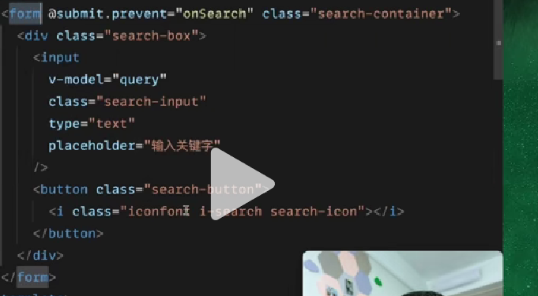
用 form 表单去处理可以减少很多 bug
脚本加载失败处理方式
一般是域名不可用，可以写一段脚本，去捕获加载脚本的 error，然后用一些后备域名去重试
dataUrl 和 base64
url:资源定位符 是用来获取资源数据
比如在 img 的 src 中写一个 url,那么他就会发出一个请求，通过这个 url 地址拿到一个图片的资源数据，就是这个图片的二进制数据
注意：真正的二进制数据在 vscode 中是写不出来的，必须要转换成 base64 才能看到
dataurl
dataurl 本质就是一个字符串
dataurl 也是用来获取资源数据的，但他不会经过网络请求(获取本地数据)
格式：
用法一：data:content/type;base64，内容
用法二：data:content/type;内容
content/type 表示 MIME 类型 用这种字符串的格式，来表达资源的类型
text / html;
text / plain;
application / javascript;
application / json;
image / png;
dataurl 最后一个地方可以写一个 base64 的数据
作用：
有些 js 代码可能是动态生成的，动态生成的代码就可以动态的拼接到 base64 的位置
base64
任意数据–>base64–>纯文本数据
比如图片是一个二进制数据（二进制数据是无法在编辑器里书写的）通过 base64 可以在编辑器里表示
svg
scalable vector graphics 可伸缩矢量图形 (新的图片格式)
传统图片格式: jpg, jpeg…
svg 优点
svg 是不会失真的
尺寸小
svg 缺点
没法很好的去表示层次丰富的图片信息
我们在前端领域里更多的是用 svg 去做图标
不要让 git 忽略大小写
设置成 false 就是不要忽略大小写
git config core.ignorecase false
通过代理创建单例模式
单例模式：一个构造函数，只能创建一个实例
要保持代码的正确性方法：
1.路径唯一（只能写出正确代码）
2.错误提示(提早发现问题，es lint 和 TS)
给一个类，返回一个只能创建单例模式的类(利用代理)
function singleton(className) {
let ins;
return new Proxy(className, {
construct(target, args) {
if (!ins) {
ins = new className(target, ...args);
}
return ins;
},
});
}
flip 动画
可以在元素结构发送变化的时候使用动画
随机数求整问题
**<font style="color:rgb(27, 27, 27);">Math.floor()</font>** 函数总是返回小于等于一个给定数字的最大整数。
**<font style="color:rgb(27, 27, 27);">Math.random()</font>** 静态方法返回一个大于等于 0 且小于 1 的伪随机浮点数
Math.floor(Math.random() * (max - min) + min);
Math.floor()与 parseInt 与 Math.ceil()
Math.floor()向下取整是指负无穷
parseInt()向下取整是指 0
Math.ceil()向上取整指正无穷
迭代器应用
让字符串一部分一部分取出来
function* walk(str) {
let s = "";
for (const c of str) {
if (c === "-") {
yield Number(s);
s = "";
} else {
s = s + c;
}
}
if (s) {
yield Number(s);
}
}
循环转递归
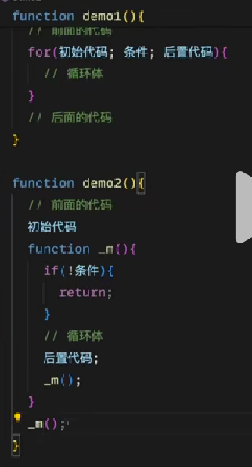
对象转原始
1.如果有[symbol.toPrimitive]函数就直接调用
2.调用 tostring 和 valueof
数组解构本质
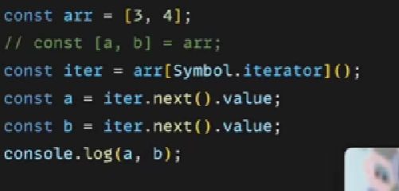
动画方案
1.css
2.js
计时器（不使用）
RAF(requestAnmailFrame)
animation api
object
1.key 只有两种类型:字符串和 symbol
2.数字会别提前到 object 的前面(key 的前面)
3.属性名加一个[]后可以写 js 表达式
file 对象
文件在底层存储和传输时是以二进制数据的形式存在的，但在 JavaScript 中，通过文件输入框获取的文件表现为一个具有特定属性和方法的对象，而不是直接以二进制数的形式呈现给开发者。
node,浏览器与 js
js 代码可以运行在 node 环境也可以运行在浏览器环境
换句话说 node 和浏览器都可以解析我们的 js 语言来执行
相对路径与绝对路径
分为 2 层含义
1.请求网络
2.请求本地文件
请求网络
url 组成：协议+主机+端口+路径（path）
使用绝对路径，可省略一些,在浏览器发送请求的时候会补全（与当前页面在哪无关）
https://www.baidu.com/1/s.html
<a href="/2.html">
完整路径
<a href="https://www.baidu.com/2.htm">
使用相对路径，相对的是路径的 path 部分
https://www.baidu.com/1/s.html
./可省略，表达的也是相对路径
<a href="./2.html">
完整路径
<a href="https://www.baidu.com/1/2.html">
圈复杂度
其实就是一个代码可阅读性的一个标准，复杂度越高说明 if 越多,越不好维护和阅读
eslint 可以设置去检查
css 变量（关联 js 和 css）
css 变量的设置与使用
:root {
--main-color: #007bff;
--font-size: 16px;
}
.my-element {
color: var(--main-color);
font-size: var(--font-size);
}
css transform:translateX 这里面使用百分比的时候，百分比是相对于元素自身的
小球滚动,滚到哪里的位置由 js 来计算决定
@keyframe move{
50% {
transform:translateX(cale(父元素的宽度 - 100%))
}
}
document.body.style.setProperty("--父元素的宽度",clientWidth+'px')
生产环境下的内容更新提示
客户端这边写一段 js，去请求当前页面（默认是在 vue 的客户端渲染的情况，其实拿到的内容很小），然后把里面的 js 和 css 文件 hash 拿出来匹配看有没有变化，如果有就帮用户进行刷新
深拷贝（属性有循环引用的情况）
思路
1.先手写深拷贝
2.使用 weakMap 缓存 key，当是复杂类型的时候，如果这个值有缓存就使用缓存
工程化(publicPath)和 vue-router(base)
publicPath:影响外部资源的获取
base:影响组件匹配
对等依赖报错
比如一个插件只支持 vue2(因为他里面用到了 vue2 的构造类)
那么在 package.json 中有一个 peerDependencies{
“vue”:”2.0”
}
他会标明
当安装的时候一旦版本不匹配就会报错
解决（在确定版本不会影响的情况下）
npm i --legacy-peer-deps
网络 I/O 与本地 I/O
无论是网络还是本地都是异步操作(需要 await 等待)
但是本地 i/o 比网络 i/o 速度要快很多
如何学习（资料）
学习资料的标准要么是官方文档要么就是源码
服务监控
监控用户（错误监控，性能监控，行为监控）
第三方库
ARMS（付费）
神策（付费）
sentry（免费）
数据埋点是前端做的 服务监控是交给第三方的
数据埋点
入侵性
非入侵性
行为认证
真正认证的不是选出一个东西，而是分析出什么时候选出，多少时间选出等，这个也需要交给第三方去认证
文档注释
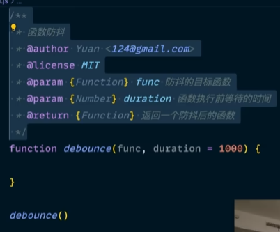
小工具
保存代码片段
snippets lab
屏幕绘制工具
screenbrush
第三方库
highlight.js(代码着色)
particles.js(粒子效果，方块效果，雪花效果)
alibaba formily 表单库
（低代码平台）阿里出品
vue-flow 流程图
{
id: '1',
type: 'input',
data: { label: 'Node 1' },
position: { x: 250, y: 0 },
class: 'light',
},
depcheck 工程依赖检查
安装
npm i -g depcheck 全局安装工具
使用
depcheck
他会告诉你工程中缺少了哪些依赖
浏览器中使用第三方库
Console Importer
在浏览器中使用$i(‘jquery’)安装 jquey
lorem picsum 可以获取随机图片
vscode 插件
any-rule(自动生成正则)
按F1(mac下fn+F1)打开正则列表.
输入关键词搜索, 比如"手机".
regex previewer(正则预览)
点击可测试，然后右边的东西如果可以匹配就会底色高亮
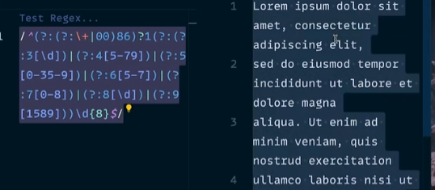